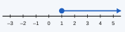
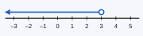
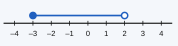
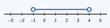

උපදෙස්: සියලුම ප්රශ්නවලට පිළිතුරු සපයන්න. සියලු ගණනය කිරීම් දී ඇති ඉඩෙහි පැහැදිලිව දක්වන්න.
සුදුසු සංකේතයක් භාවිතයෙන් එක් එක් ප්රකාශය අසමානතාවක් ලෙස ලියන්න.
(i) x, 5 ට වඩා විශාල වේ.
(ii) y, −2 ට වඩා කුඩා හෝ සමාන වේ.
(iii) ඡන්දදායකයෙකුගේ වයස a (අවුරුදුවලින්) අවම වශයෙන් 18 විය යුතුය.
(iv) බෑගයක ස්කන්ධය m, 20 kg නොඉක්මවිය යුතුය.
(v) කාමරයක උෂ්ණත්වය t, 20 °C හා 30 °C අතර වේ (අගයන් දෙකම ඇතුළුව).
එක් එක් ප්රකාශය සත්යද අසත්යද යන්න ලියන්න.
(i) −3 > −5 (ii) 0 < −1 (iii) ½ ≥ 0.5 (iv) −2 ≤ −2 (v) 3 × (−2) > −5
එක් එක් අසමානතාව සංඛ්යා රේඛාවක නිරූපණය කරන්න.
(i) x > 2 (ii) x ≤ −1 (iii) −2 < x ≤ 3 (iv) 0 ≤ x < 4
එක් එක් සංඛ්යා රේඛාවේ නිරූපණය කර ඇති අසමානතාව ලියන්න.




එක් එක් අසමානතාව තෘප්ත කරන x හි සියලු නිඛිල අගයන් ලියන්න.
(i) −2 < x ≤ 3 (ii) −4 ≤ x < 0 (iii) x ≤ 5, මෙහි x ධන නිඛිලයකි
එක් එක් අසමානතාව විසඳා, විසඳුම සංඛ්යා රේඛාවක නිරූපණය කරන්න.
(i) x + 4 > 9 (ii) x − 3 ≤ 2 (iii) 3x ≥ 12
(iv) x2 < 3 (v) 2x + 1 > 7 (vi) 5x − 3 ≤ 2x + 9
අභියෝගය: එක් එක් අසමානතාව විසඳන්න. ඍණ සංඛ්යාවකින් ගුණ කිරීමේ හෝ බෙදීමේ නීතිය මතක තබා ගන්න.
(i) −2x < 6 (ii) 5 − x ≥ 2
(i) 3(x − 2) < x + 4 විසඳා, එය තෘප්ත කරන විශාලතම නිඛිලය ලියන්න.
(ii) x + 12 ≥ 3 විසඳා, එය තෘප්ත කරන කුඩාම නිඛිලය ලියන්න.
එක් එක් අවස්ථාවේ අසමානතාවක් ගොඩනගා එය විසඳන්න.
(i) පෑනක මිල රු. 45 කි. රු. 500 කින් මිලදී ගත හැකි උපරිම පෑන් ගණන කීයද?
(ii) සෝපානයකට උපරිම වශයෙන් 600 kg ක බරක් රැගෙන යා හැක. ක්රියාකරුගේ බර 70 kg වන අතර එක් පෙට්ටියක බර 40 kg වේ. ක්රියාකරු සමඟ සෝපානයට රැගෙන යා හැකි උපරිම පෙට්ටි ගණන කීයද?
(iii) අනුයාත නිඛිල තුනක එකතුව 40 ට වඩා කුඩා වේ. කුඩාම නිඛිලයට ගත හැකි විශාලතම අගය සොයා, නිඛිල තුන ලියන්න.
(i) x > −2 හා x ≤ 3 යන දෙකම තෘප්ත කරන නිඛිල ලියා, ඒවා සංඛ්යා රේඛාවක දක්වන්න.
(ii) x ≥ 1 හා x < 7 වන ඉරට්ටේ නිඛිල x ලියන්න.
චින්තන ප්රශ්නය: සෘජුකෝණාස්රයක දිග 8 cm ද පළල x cm ද වේ. එහි පරිමිතිය 30 cm ට වඩා අඩු විය යුතුය.
(i) x ඇසුරෙන් අසමානතාවක් ගොඩනගා එය විසඳන්න.
(ii) x සෙන්ටිමීටර පූර්ණ සංඛ්යාවක් නම්, x ට ගත හැකි සියලු අගයන් ලියන්න.